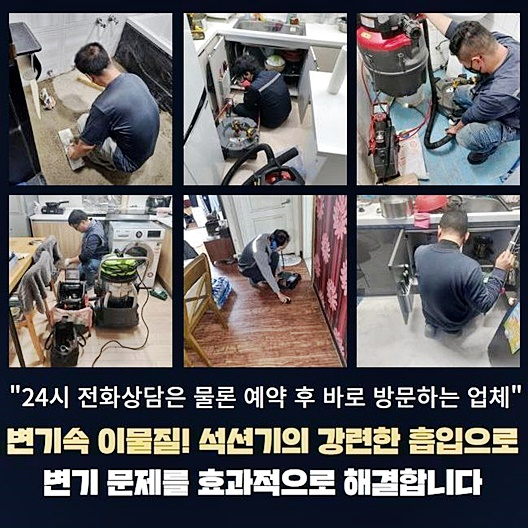
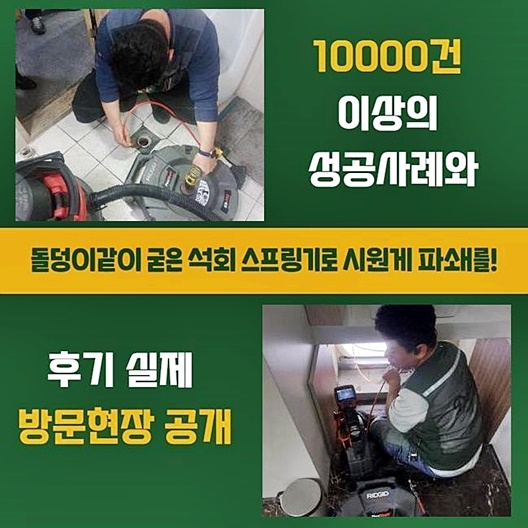
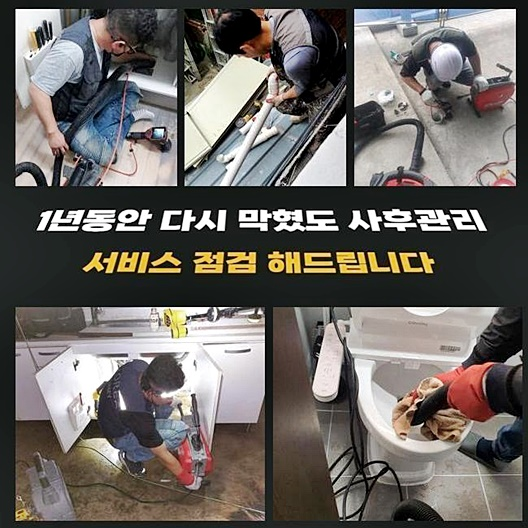
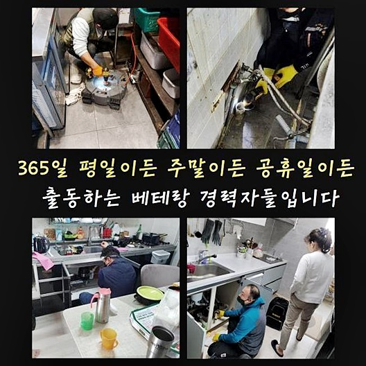
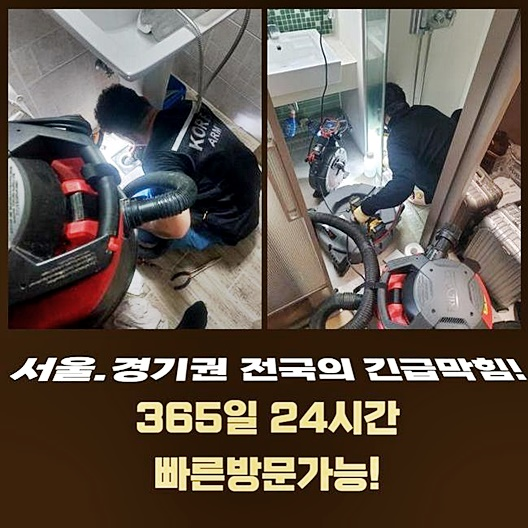

🏠 수원 금곡동하수도역류 곡반정동 배관뚫기 배관뚫는업체
수원 곡반정동 싱크대막힘 전문 시공 후기

📋 작업 개요
- 위치: 수원 곡반정동, 곡반정동, 수원
- 서비스 유형: 싱크대막힘, 하수구막힘, 배관막힘, 누수수리, 역류해결, 뚫는업체, 배관청소, 고압세척
- 작업 일시: 2024. 7. 30. 1:18
- 업체명: 하수구수사대 (010-5615-2118)
🔍 문제 상황
수원 금곡동하수도역류 곡반정동 배관뚫기 배관뚫는업체
주방에서 물이 안빠지는 증세가 생기면 씽크대의 배수관을 넘어 다른공간의 배관들도 환경적으로도 피해가 있죠
또한 통수오류가 야기되었는데 조치에 대해 힘쓰지않는다면 옆으로 새어버리기도 하며 아래세대에도 누수증상이 번질 수 있답니다
심한 증세가 아닐것이다 단정짓는다면 예상치못하게 더욱 심한 문제들이 생겨나고 증상이 심해졌을때 쉽게 해결해보고자 해도 괄목할만한 개선이 안되죠
문제 발생 시 불미스러운 사안이 발생되지 않게 하려면 무슨 방법을 통해 바로 잡아야되는지 사례를 통해 살펴보도록 해요
각 라인에 문제들이 발발한 고객님의 댁에서 문의가 접수되고서 저희업체는 신속히 방문드렸습니다
배수장애가 생긴 시점으로부터 며칠이 지난 상태였고 이유에대해서 질문드리니 고객님은 만성적인 결함이 아니라고 생각하셔서 도움요청이 더뎌진것이라 설명했어요
그러는 와중 시간이흐르면서 증세가 심각해지는 바람에 의뢰를 하신것이였죠
왜 그런것인지 온전히 알아보기위하여 배수관을 살펴보았더니 하수관에서 역류되는 상태가 관찰되었는데요
이러한 모습은 단조로운 증상이 아니라 심화된 문제인것을 뜻하는 시그널이라 할 수 있어요
빠르게 내시경장비를 관로로 밀어넣어 체크해보니 배수관이 엉망인것을 확실히 알 수 있었습니다

🔎 원인 분석
💡 전문가 진단: 정밀 진단 장비를 사용하여 슬러지의 고착 여부를 판명하고 타격/세척 작업을 실시했습니다.
문제들을 없애주기위하여 내시경장비를 빼고 석션장치를 이용해 하수들을 제거시키는 작업들을 시작했는데요
이런 단계를 수행하는 시기에 석션기기의 헤드부분을 틈이 없도록 압박해서 잔해가 흡입되도록 힘을 주고있는게 그 효과를 상승시킬 수 있어요
석션기기를 단순하게 작동시켜서는 충분치 못해서 틈새를 허용하지않고 빨아당겼어요
간단한 사안일땐 스프링장비를 가용해 막히게 된 지점을 바로 잡는 현장도 있으나 금일의 사안에선 이물을 빈틈없이 없애주는 것이 그 다음으로 증상을 방어하는것에 필수이기에 석션기 가용을 택한것이죠
꾸준히 오염물을 빼고 다시 내시경기기를 집어넣고 깊은 지점까지 살펴보았습니다
사이즈가 큰것은 8할 이상 제거된 상태지만 증상을 보이는 배수관의 내측은 심히 이물이 가득한 현상을 보이고 있었습니다
막히게 된 지점을 없애도록 이 이상 석션기기의 운용은 의미가없다 결론을 지었습니다
곧이어 본격적으로 샤프트의 가용을 실시해보기로 했답니다
곧이어 전문기계를 선별하여 수행해줄 방식들과 관련해서 의뢰인분에게 이해가능하도록 안내했어요
이런 경우에서는 여러분들도 전 단계의 흐름을 아시는게 큰 역할을 하므로 오차없는 안내로 안심시켜드리고 증상을 온전하게 해결하기위하여 심혈을 기울였어요
하수 시스템 오류는 불현듯 발생되나 알맞은 대처가 결여되면 피해들과 비용초과를 감수할 수 밖에 없는걸 모르시는 분들이 많아요

🔧 작업 과정
설명 곧장 고객님은 곧이어 수리를 원하셨기에 조속하게 준비했어요
이용될 장치는 샤프트기기와 진단 시에 가용되었던 내시경기기로 쌓인 이물을 타격하여 세척해줘요
바로 샤프트기기를 배수라인으로 투입해서 내시경장치까지 이용해주며 쌓여진 오염원을 청소해주는 작업들을 수행했습니다
시각적으로 확인할 수 없는 하수관을 확인하면서 청소를 진행시켜야 내부에 쌓인 이물을 확실히 걷어내는게 가능합니다
이 단계 다음엔에 위처럼 시공을 진행시킬 땐 내시경장치를 이용해 의뢰인분도 관찰해볼 수 있으므로 신뢰있는 작업들을 온전하게 느끼실 수가 있습니다
꾸준하게 아래 쌓인 잔해물을 청소해주면 자연스레 심부에는 잔해물이 침전되기에 석션장치를 운용시켜 제거시킵니다
문제들을 발현시키는 오염원을 제거하고 내시경장비로 깊은 지점까지 관찰해주는데 전 구간에 걸쳐 깨끗히 시정된 모습을 의뢰자와 보았죠
위처럼 저희의 경우 청소된 하수관을 고객분과 함께 체크합니다
이물이 잔존한 상태에서 배수관이 막혀버린걸 시정하지못한다면 역류증상이 생김과 동시에 곧이어 악취가 발발하니 이를 참고하시어 청소를 시행하시기를 권장드리겠습니다
근처에 배수관에 문제들이 생겨나서 내방했는데 당도해서 배수관이 어떤지 내시경장비로 조속히 체크했죠
확인결과 여기저기 기름들이 뒤엉켜 쌓여서 잔해물이 구간마다 붙어버림과 동시에 굳어진것을 확인했죠
곧장에 바로 세척할 준비를 해주었습니다
첫번째로 쉽게 복구가능한것인지 확인 차 장판으로 배수관에 석션을 넣어서 강하게 흡입하는 청소를 진행했습니다
신속히 작업들을 지속적으로 속행해주고 내부 모습을 관찰하니 아래에 이물이 완벽하게 청소되지 못한 현상을 목격했습니다
빠르게 이물이 쌓인 곳을 타겟으로 해 세척을 이어나갔습니다
이때 적절한 기기는 스케일링 장비로서 하수관으로 밀어넣은 뒤 케이블 끝에 위치한 노커부분을 곧이어 회전을 시켜 오염물을 조속히 걷어내는 청소를 진행했습니다
바로 회전이 되며 오염물을 탈락시키고 흡입장치로 깊이 떨어지지않게 서둘러 처리했죠


✅ 작업 완료
그 다음으로 내시경장치로 문제가 없는지 체크했습니다
최종적으로 배수관으로 수도를 흐르게해 배수속도를 체크해보니 답답한 기색없이 빠져나가는걸 체크해보았습니다
안정적으로 배수장애들을 뚫어내고 싶을때 곧장 저희의 전문가를 호출하시면 연관된 해결들을 실시해요
접수하시고 계신 곳으로 한시간 안팎으로 내방하니 우려할 일이 없으십니다
마지막으로 편한 스케줄의 날짜가 있을땐 조정하고 있으니 이것또한 기억해주세요!


⚠️ 베란다 누수 및 방수 관리 방법
- ✅ 비가 많이 올 때 창틀 주변이나 아래층 천장에 얼룩이 생기는지 정기적으로 확인해 보세요.
- ✅ 우수관 주변 실리콘 마감이 들뜨거나 깨진 틈새가 있는지 손상 여부를 수시로 체크하세요.
- ✅ 베란다 바닥 타일의 줄눈(메지)이 소실되면 그 틈으로 물이 침투하여 누수가 유발됩니다.
- ✅ 누수 의심 증상 발견 시 방치하면 아래층 손실이 커지므로 즉시 전문가의 진단을 받으십시오.
💡 핵심 정리
- 확실한 장비 작업(내시경 점검 및 샤프트 스케일링)으로 원인을 뿌리 뽑습니다.
- 작업 후 1년 이내에 동일한 부위 재발 시 100% 무상 A/S 서비스를 보장합니다.
- 서울 · 경기 · 인천 전 지역에 24시간 언제든 긴급 출동할 수 있도록 항시 대기 중입니다.
❓ 자주 묻는 질문 (FAQ)
🚨 수원 곡반정동 싱크대막힘 문제로 고민이신가요?
정확한 원인 진단과 확실한 시공으로 재발 없는 해결을 약속드립니다.
24시간 긴급 출동 | 서울 · 경기 · 인천 전지역 | 1년 내 재발 시 무상 A/S